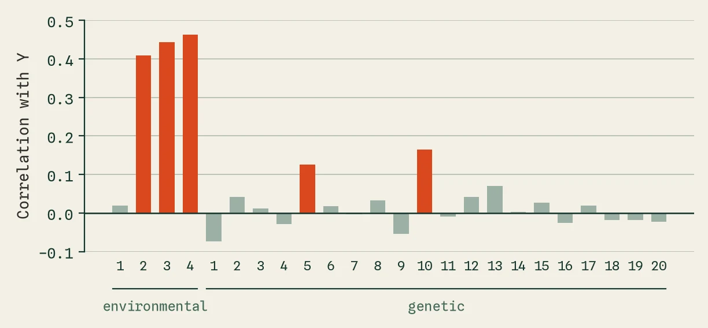
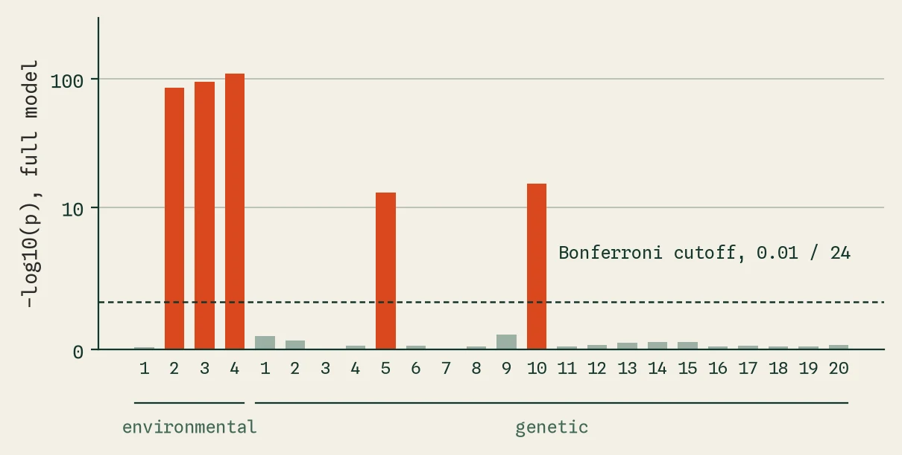

Finding the true model
| Tools | R: lm, anova, cor |
|---|---|
| Data | 1,204 people, 4 environmental and 20 genetic predictors |
| Result | 5 of 24 predictors kept, adjusted R² 0.600, no interactions |
The question
The outcome Y in this dataset was simulated from an equation I couldn't see. My job was to recover it. Which of the 24 predictors are really in the equation, and does it include any gene by environment interactions, where the effect of the environment depends on which genes you have?
What I did
Checked the data. There were 1,204 complete rows. The four environmental variables, E1 to E4, are continuous and run from 5 to 10. The twenty genetic markers, G1 to G20, are 0 or 1. The scatterplots looked linear and a Box Cox check put λ near 1, so I left Y untransformed.
Screened with correlations. Three environmental variables stood out right away, E2, E3 and E4 at 0.41, 0.44 and 0.46. Two genes, G5 and G10, were weaker but clearly above the rest at 0.13 and 0.17.

Fit everything, then cut hard. A model with all 24 predictors explained 60.7% of the variance (adjusted R² 0.599). Testing 24 coefficients at once makes a false positive likely, so I used a Bonferroni cutoff: 0.01 divided by 24, about 0.0004. The same five predictors passed, and by a wide margin. Nothing else came close.

Refit with five. The reduced model had an adjusted R² of 0.6003, slightly higher than the full model's 0.5991 with 19 fewer predictors:
Ŷ = 7.92 + 0.288·E2 + 0.308·E3 + 0.338·E4 + 0.354·G5 + 0.390·G10Tested interactions. I added all six gene by environment terms, each of E2, E3 and E4 crossed with G5 and G10. None was significant on its own (p values from 0.07 to 0.93), and an F test against the reduced model gave F = 1.20, p = 0.305. They don't belong. Residual and QQ plots for the final model showed no curve or funnel, only small departures at the ends.
What I found
Y comes from a simple additive model: three environmental variables and two genes, with no interactions. The environment matters more. Moving one environmental variable across its range of about 5 points shifts Y by roughly 1.4 to 1.7, while carrying G5 or G10 adds about 0.35 to 0.39.
What I'd do next
- Test for curvature and higher order terms, which this approach would miss.
- Check that the same five survive on resampled data, with bootstrap or cross validation.
- Compare against lasso, which does selection and fitting in one step.